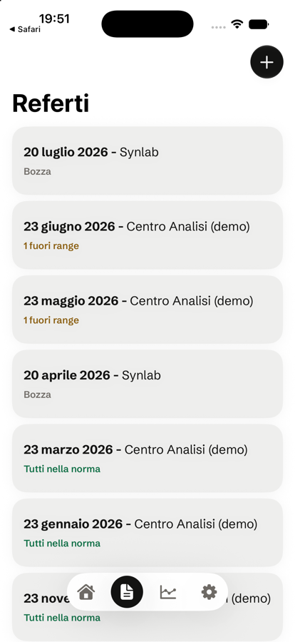
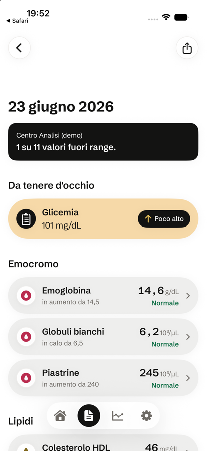

Refertrack legge da solo i valori dai tuoi referti (foto o PDF) e ti mostra l'andamento di ogni parametro nel tempo — niente più fogli sparsi o Excel improvvisati.
Tutto resta sul tuo iPhone · nessun cloud di terze parti

Refertrack non è ancora sull'App Store: si prova tramite TestFlight, l'app ufficiale Apple per le beta — gratis, sicura, in 3 passaggi.
Se non ce l'hai già, scaricala dall'App Store: è l'app di Apple per provare le beta, gratuita.
Tocca "Scarica la beta su TestFlight" qui sopra dal tuo iPhone, poi tocca "Accetta" e "Installa".
Da quel momento in poi apri Refertrack come una qualsiasi app — TestFlight ti avvisa quando esce un aggiornamento.
Richiede iPhone con iOS 26 o successivo. La beta pubblica ha un numero limitato di posti.
Fotocamera, un PDF del laboratorio o una foto già nella galleria: l'OCR sul dispositivo legge ogni valore e te lo mostra da confermare prima di salvare — mai un dato inventato.

Ogni parametro diventa un grafico continuo tra un referto e l'altro, non un numero isolato da confrontare a memoria.
Metti a confronto due controlli, parametro per parametro, e vedi subito cosa è cambiato.
Traccia anche i referti di un figlio o di un familiare, separati dai tuoi, sullo stesso telefono.
Nessun server di Refertrack vede mai i tuoi dati sanitari: elaborazione on-device, backup solo sul tuo iCloud personale.
La beta pubblica su TestFlight è aperta ora. Il tuo feedback aiuta a decidere cosa arriva prima sull'App Store.
È l'app ufficiale di Apple per provare le versioni beta prima che escano sull'App Store. Si scarica gratis dall'App Store e serve solo per installare app come Refertrack durante il test.
Sì, completamente. Il riconoscimento dei referti resta gratis anche dopo il lancio; alcune funzioni (storico illimitato, confronto tra referti, profili multipli, export) saranno Premium.
Sì: foto e valori vengono elaborati sul tuo iPhone, mai su un server di Refertrack. L'unico backup è quello del tuo iCloud personale, se lo attivi.
Le build TestFlight scadono dopo 90 giorni: ne arriva sempre una nuova prima, con le funzioni aggiunte nel frattempo.